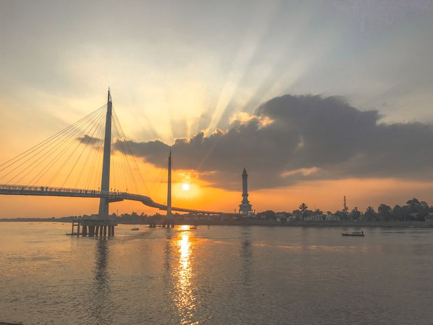
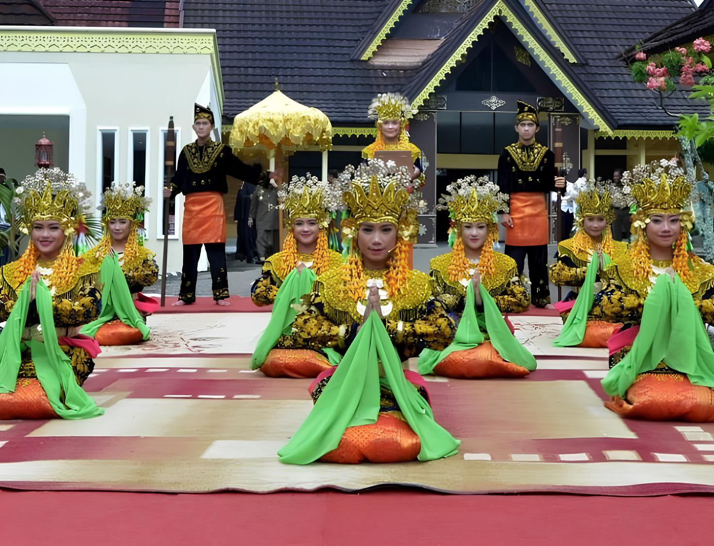
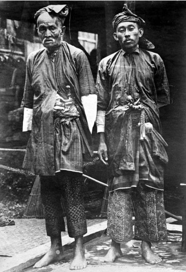
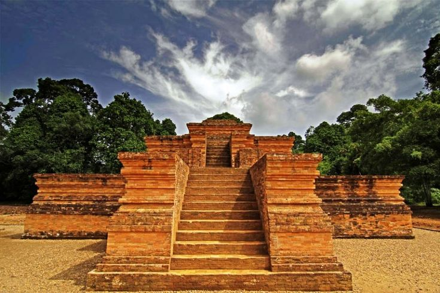
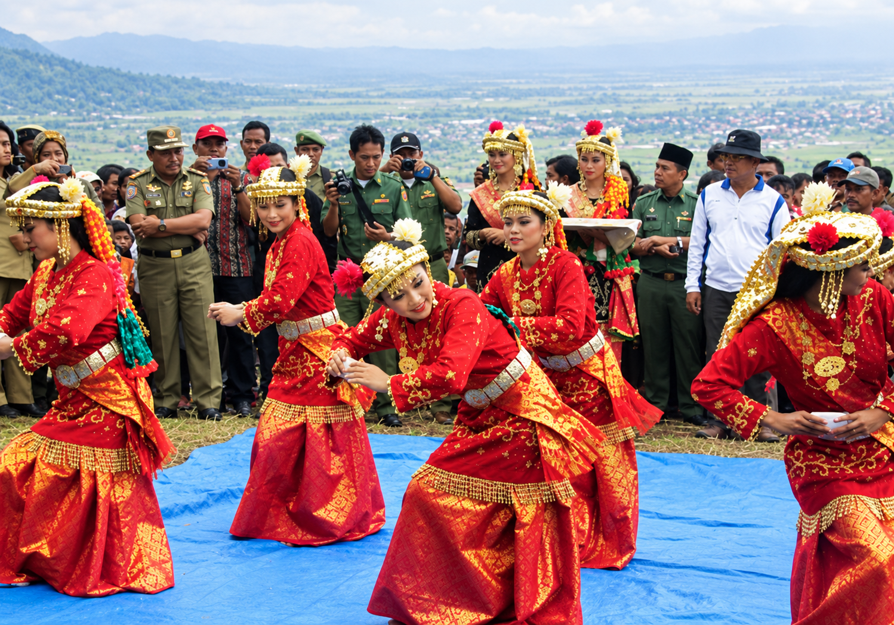
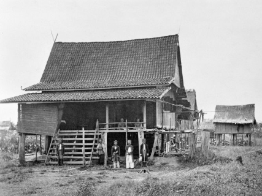
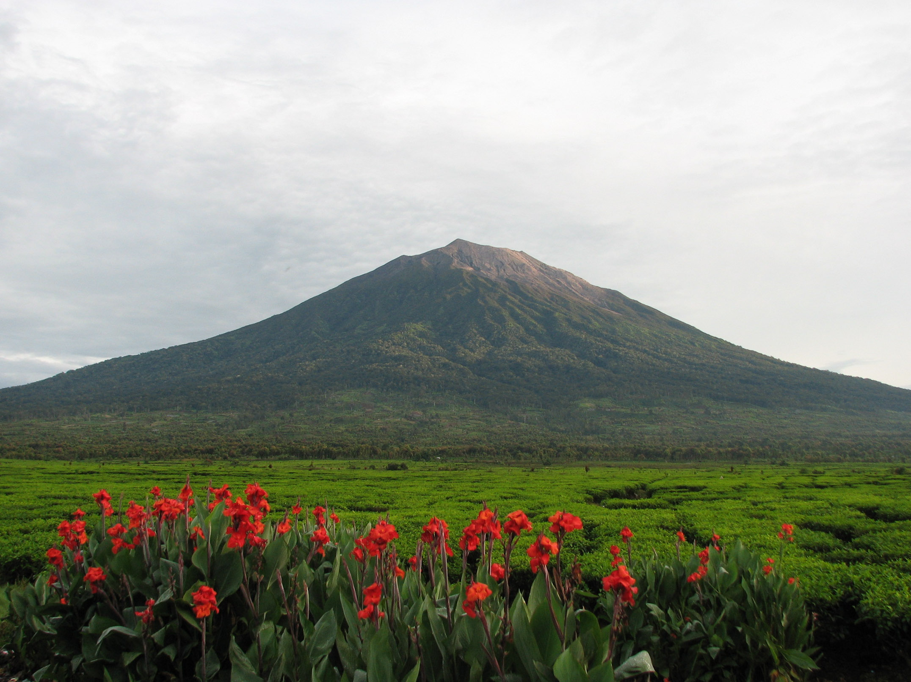
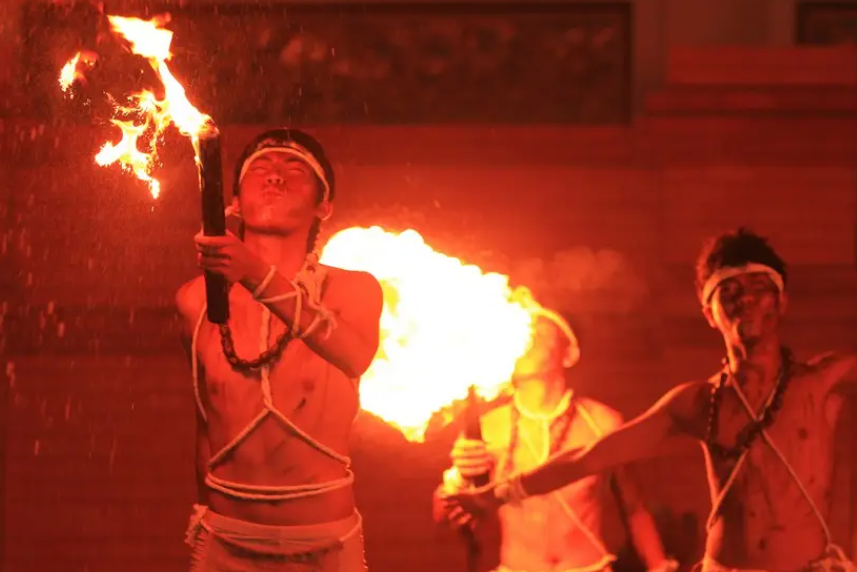

Galeri Kebudayaan & Wisata Jambi
Jelajahi keindahan warisan sejarah, pesona alam, tradisi seni, dan kuliner
- Semua
- Sejarah
- Wisata Alam
- Seni & Tradisi




Tari Sekapur Sirih
Sekapur sirih dalam bahasa Indonesia memiliki arti sebungkus sirih. Dalam budaya Melayu, sirih merupakan simbol penghormatan dan keramahan. Oleh karena itu, tarian ini menjadi representasi dari sambutan hangat masyarakat Jambi kepada tamu. Gerakan-gerakan dalam tarian sekapur sirih mencerminkan sikap hormat dan sopan santun.










Gunung Kerinci
Gunung Kerinci (juga dieja dengan "Kerintji") adalah gunung tertinggi di pulau Sumatra dan gunung berapi tertinggi di Indonesia juga Asia Tenggara. Gunung Kerinci terletak di perbatasan Kabupaten Kerinci, Jambi dan Kabupaten Solok Selatan, Sumatera Barat, di Pegunungan Bukit Barisan dengan ketinggian 3.805 mdpl.

